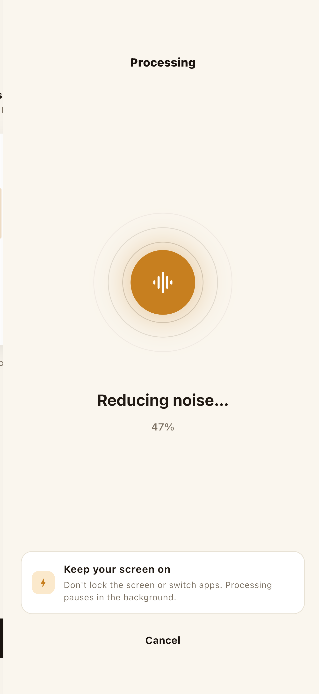
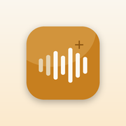

Nettoyer un enregistrement de réunion avec NoisyNo — 5 étapes
Le principe est le même, que la réunion ait eu lieu sur Zoom, Teams ou Google Meet, ou qu’elle ait été enregistrée dans la salle avec un téléphone : exporter → choisir → nettoyer → comparer → partager. Pas de compte, pas d’envoi.
Mettez l’enregistrement sur votre téléphone
Exportez la réunion : Zoom et Teams fournissent une vidéo MP4 ou un audio M4A/MP3 ; un enregistreur l’enregistre déjà en local. Copiez-la sur votre téléphone. Aucune conversion nécessaire : NoisyNo lit les formats audio courants et peut extraire l’audio directement de la vidéo de la réunion.

Choisissez le fichier de la réunion
Dans l’onglet Files (Fichiers), cherchez par nom ou faites défiler les enregistrements récents et choisissez la réunion ; l’application ne touche qu’au fichier sélectionné. Pré-écoutez d’abord quelques secondes : un ventilateur régulier ne se nettoie pas comme une salle qui résonne, et cela vous donne une idée du résultat à attendre.

Lancez le nettoyage (100 % sur l’appareil)
Touchez Clean et le modèle intégré réduit le bruit constant sous les voix, sans attente d’envoi, entièrement dans l’appareil. Les réunions longues prennent plus de temps ; gardez l’application au premier plan pendant le traitement, car passer à une autre application peut le mettre en pause.

Comparez avant de faire circuler le fichier
Utilisez le bouton Original / Cleaned pour comparer le même passage : écoutez un moment où quelqu’un parle doucement ou par-dessus le ventilateur, pour vérifier que les voix restent naturelles. Si la version nettoyée perd trop, votre original est intact : rien ici n’écrase le fichier source.

Partagez vers vos notes ou un outil de transcription
Touchez Partager et envoyez l’audio nettoyé là où il doit aller : notes, service de transcription, outil de synthèse, canal de l’équipe. Il n’y a pas de compte, donc rien ne reste dans une bibliothèque de réunions sur le serveur de quelqu’un d’autre ; le fichier reste là où vous le placez, et c’est vous qui décidez qui le voit.


NoisyNo — Voice Noise Remover
Une application hors ligne pour supprimer le bruit autour de la voix : elle réduit le ronflement des ventilateurs, le souffle, le vent, la climatisation et l’ambiance d’une pièce dans les enregistrements et l’audio des vidéos. Le traitement se fait dans votre téléphone, sans aucun envoi de fichier.
Pourquoi garder l’audio des réunions sur votre appareil
L’enregistrement d’une réunion est l’un des fichiers les plus sensibles que vous puissiez produire : conditions d’un contrat, noms de clients, discussions salariales, sujets juridiques ou RH. Un « outil gratuit en ligne pour supprimer le bruit » envoie toute cette conversation sur le serveur de quelqu’un d’autre. Un outil qui fonctionne sur l’appareil ne l’envoie jamais nulle part, ce qui compte surtout pour les réunions de stratégie internes, les réunions couvertes par un accord de confidentialité (NDA) et les échanges juridiques, médicaux ou RH.
On envoie toute la réunion
L’enregistrement complet est envoyé sur un site avant d’être traité. Vous devez faire confiance quant à l’endroit où il est stocké, aux personnes qui y ont accès et au moment où il est réellement supprimé.
Tout se passe dans votre téléphone
NoisyNo effectue le nettoyage en local. Le fichier de réunion choisi et le résultat nettoyé ne sont pas envoyés sur un serveur de GrayForge.
Quels bruits de réunion il peut vraiment supprimer
La réduction de bruit sur l’appareil est la plus efficace sur les bruits de fond constants, ces sons continus présents sous chaque voix. Les coupables habituels en réunion :
- Ventilateurs d’ordinateurs portables et fixes
- Climatisation et ventilation, avec leur bourdonnement continu
- Bourdonnement et écho de la salle dans les pièces aux murs durs
- Souffle du micro des casques ou ordinateurs portables bas de gamme
- Ronflement électrique — bourdonnement du secteur 50/60 Hz
- Bruit de rue ou de bureau constant
Ce qu’il ne peut pas entièrement corriger, ce sont les sons soudains et isolés : une porte qui claque, une toux, des personnes qui parlent en même temps. Ces sons ne sont pas constants, ils sont donc beaucoup plus difficiles à séparer.
Bon à savoir : « aucun envoi de fichier » ne veut pas dire « aucun réseau »
L’enregistrement de votre réunion et le résultat nettoyé ne sont pas envoyés sur un serveur de GrayForge : selon la politique de confidentialité de NoisyNo, les fichiers sont traités sur l’appareil. Cela ne veut pas dire que l’application n’utilise jamais le réseau : des diagnostics limités (Firebase Crashlytics, Analytics, Remote Config) peuvent tourner pour la stabilité, et ils ne contiennent ni noms de fichiers ni audio.
NoisyNo n’envoie pas votre réunion pour la traiter, mais les données de diagnostic liées à la stabilité ne sont pas littéralement nulles. Considérez le traitement des fichiers et les données de diagnostic comme deux périmètres distincts.
Questions fréquentes
Puis-je nettoyer un enregistrement de réunion sans l’envoyer sur un site ?
Oui. NoisyNo traite l’audio de la réunion dans votre téléphone : le fichier n’est pas envoyé sur un serveur de GrayForge. C’est important pour les réunions confidentielles, dont l’enregistrement ne doit pas quitter votre appareil.
Est-ce que cela fonctionne avec les enregistrements Zoom et Teams ?
Oui. Une fois l’enregistrement exporté depuis Zoom, Teams, Google Meet ou n’importe quel enregistreur, puis copié sur votre téléphone, NoisyNo peut en nettoyer l’audio. Il lit directement les fichiers audio courants et peut aussi récupérer la piste audio d’une vidéo de réunion MP4 ou MOV.
Quels bruits de réunion peut-il vraiment supprimer ?
Il est le plus efficace sur les bruits de fond constants : ventilateurs d’ordinateurs, bourdonnement de la climatisation et de la ventilation, résonance de la salle et léger souffle. Les sons soudains, comme une porte qui claque ou une toux isolée, sont plus difficiles pour n’importe quel outil de suppression de bruit, car ils ne sont pas constants.
Puis-je nettoyer l’audio de la vidéo de la réunion, et pas seulement un fichier audio ?
Oui. Pour les fichiers vidéo pris en charge, NoisyNo extrait la piste audio, en supprime le bruit et vous laisse enregistrer ou partager l’audio nettoyé.
Est-ce sûr pour des réunions confidentielles ou internes ?
Les fichiers d’enregistrement et de résultat ne sont pas envoyés sur un serveur de GrayForge, et aucun compte n’est nécessaire. Pour la stabilité de l’application, des diagnostics limités basés sur Firebase peuvent être traités ; ils ne contiennent ni noms de fichiers ni contenu audio. Respectez toujours les règles de votre organisation en matière d’enregistrement et de données.
NoisyNo est-il gratuit, et existe-t-il sur iPhone et Android ?
NoisyNo se télécharge gratuitement, sans compte, sans publicité et sans envoi de fichier, et la suppression du bruit est gratuite. La normalisation du volume (loudness) est une fonction Pro, débloquée par un achat unique dans l’application. NoisyNo est disponible sur l’App Store pour iPhone et sur Google Play pour Android.
Rendez votre prochaine réunion agréable à réécouter.
Une fois l’application installée, nettoyer votre premier enregistrement de réunion prend environ trois minutes. Si quelque chose n’est pas clair, c’est la personne qui l’a conçue qui vous répond directement.
grayforge.dev@gmail.com